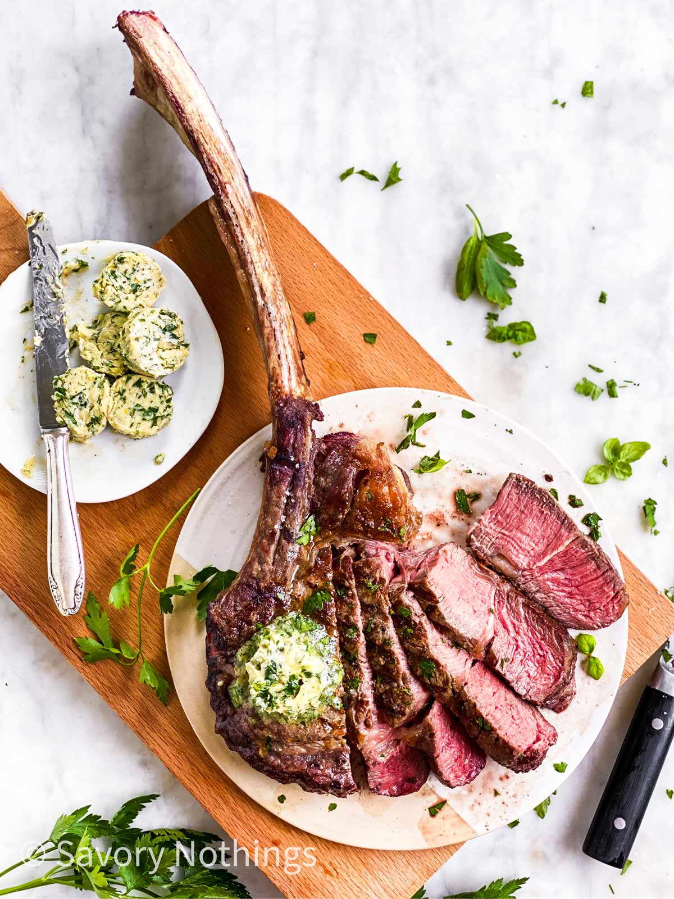

A tomahawk steak is specially cut with at least five and up to 12 inches of bone left attached to it.
This extra-long bone is then French trimmed (a culinary term known as “Frenching”) to have no meat or fat left on it, so it looks like a handle.
This steak is cut to look like the handle of an ax or tomahawk, hence the name.
A tomahawk steak is also referred to as a bone-in ribeye or tomahawk chop.